Hadrian's Villa
June 26, 2023

On June 26, 2023 we visited Hadrian’s Villa during our Italy trip.
The day covered the pools and colonnades, museum statues, and a lot of walking among the brick ruins.


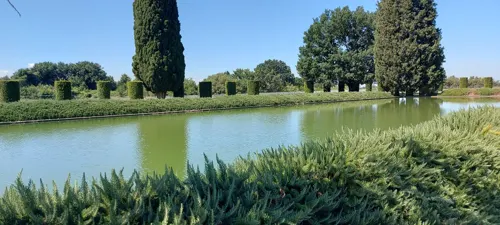

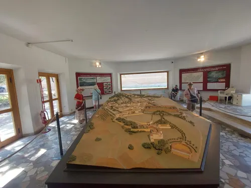

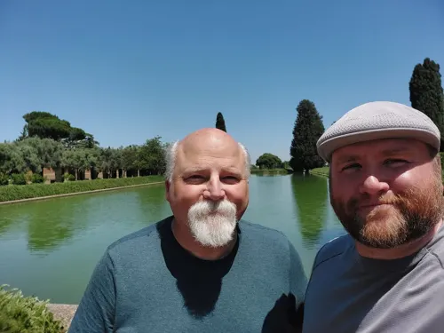

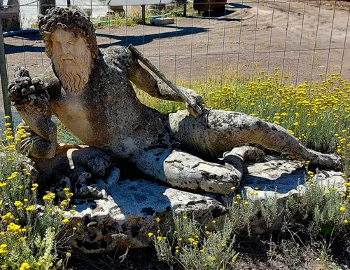

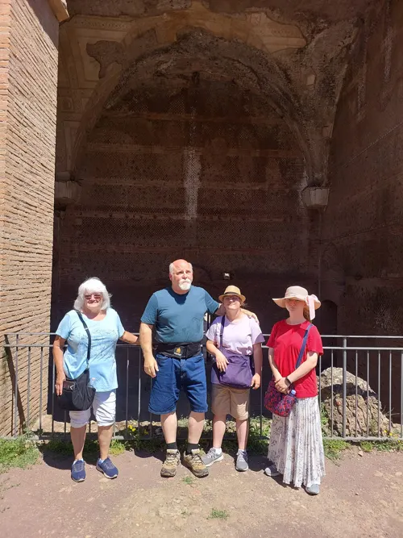

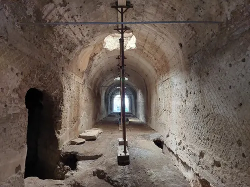


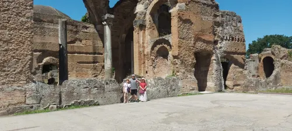

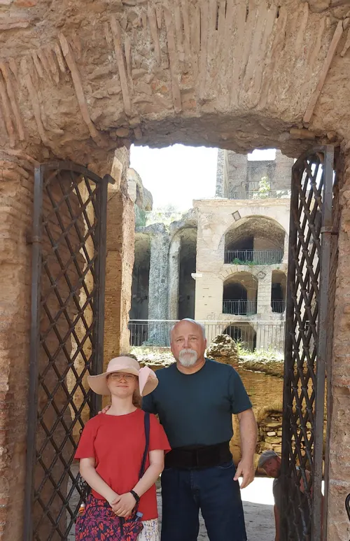

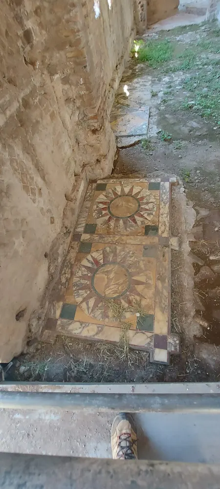

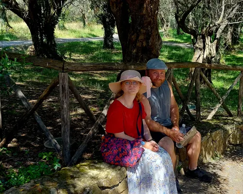

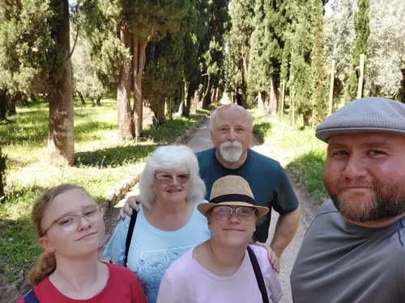